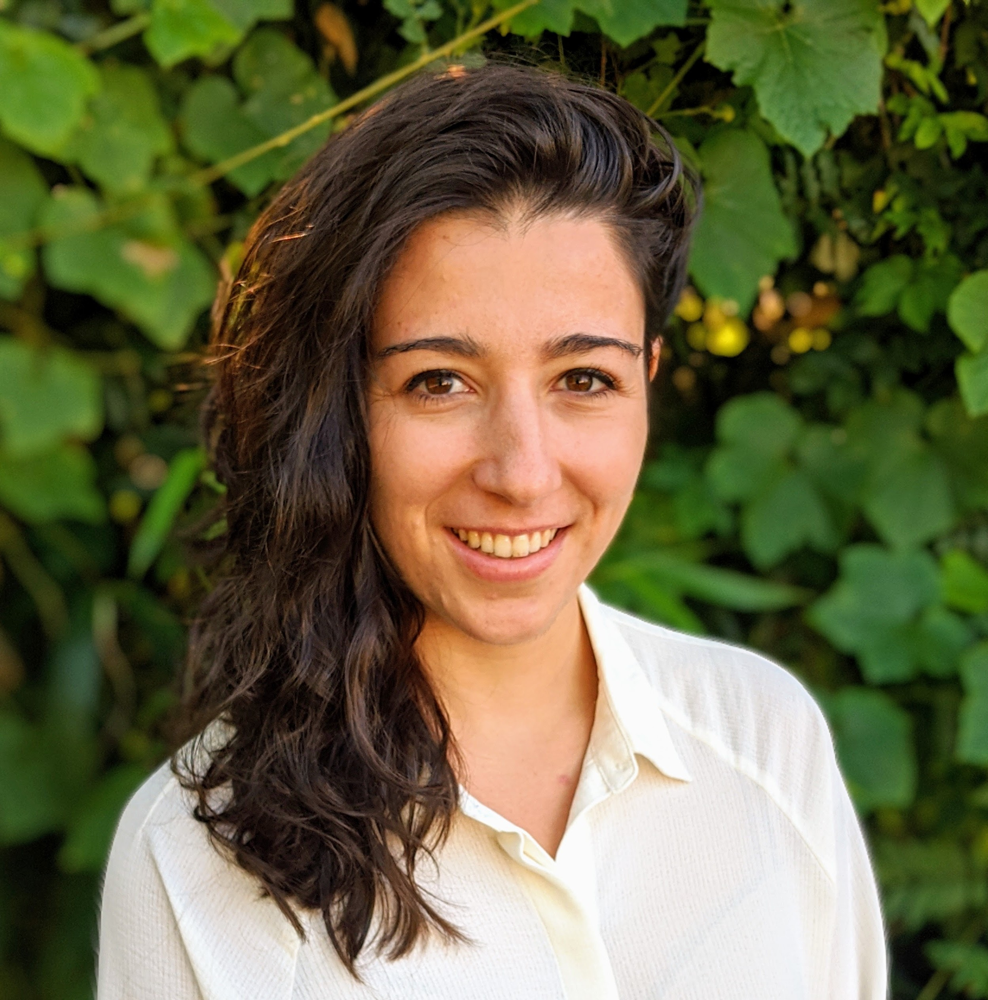

DataEd 2022 Program
All proceedings are now available online, you can find them here.
| Time (UTC-4) | Program | Presenter - Title | Sources |
| 8:30 AM | Walk-in | ||
| 8:45 AM | Welcome | video | |
| 9:00 AM | Opening Keynote | Kathi Fisler - Data-Centricity: Rethinking Introductory Computing to Support Data Science | pdf and video |
| 10:00 AM | Paper session 1 | Karen Davis - Instructional Design for Teaching Relational Query Optimization to Undergraduates | pdf and video |
| 10:15 AM | Naaz Sibia - The Positive Effects of using Reflective Prompts in a Database Course | pdf and video | |
| 10:30 AM | Break | ||
| 11:00 AM | Paper session 2 | Johannes Schildgen - Game-based Learning of SQL Injections | pdf and video |
| 11:15 AM | Marco Zappatore - Enhancing Data Education with Datathons: an Experience with Open Data on Renewable Energy Systems | pdf and video | |
| 11:30 AM | Daniele Traversaro - Collaborative Learning in an Introductory Database Course: A Study with Think-Pair-Share and Team Peer Review | pdf and video | |
| 11:45 AM | Abdussalam Alawini - Teaching Data Models with TriQL | pdf and video | |
| 12:00 PM | Lunch break | ||
| 1:30 PM | Keynote 2 | Julia Stoyanovich - Teaching Responsible Data Science | pdf, slides and video |
| 2:30 PM | Discussion sessions | video | |
| 3:30 PM | Break | ||
| 4:15 PM | Paper session 3 | Alan Labouseur - Managing Data... and COVID -- An Experience Report | pdf and video |
| 4:30 PM | Sophia Yang - Analyzing Student SQL Solutions via Hierarchical Clustering and Sequence Alignment | pdf and video | |
| 4:45 PM | Joseph M. Hellerstein - Piloting Data Engineering at Berkeley | pdf and video | |
| 5:00 PM | Alan Fekete - Teaching Data Management Concepts for Data in Files | pdf and video | |
| 5:15 PM | Break | ||
| 5:45 PM | Industry Panel | Sarah Krasnik and Emilie Schario - Industry perspectives on education and training for emerging roles in data | video |
| 6:30 PM | Closing | video |
Keynotes
Kathi Fisler
Data-Centricity: Rethinking Introductory Computing to Support Data ScienceOn a growing number of campuses, data science programs offer introductory courses that include a non-trivial amount of programming. The content of such courses overlaps that of traditional computer science introductory courses, but neither course subsumes the other. This talk argues that a common introductory course that covers both data science and data structures supports students and provides curricular flexibility, while also bringing social impacts of computing into the early curriculum. We'll discuss both the design and implementation of such a course, with particular focus on programming language features that support it.
 Bio: Kathi Fisler is Research Professor and Director of Undergraduate Studies in Computer Science at Brown University. For the past several years, she and collaborator Shriram Krishnamurthi have been developing a course, textbook, and research program around data-centric computing. This modern take on introductory CS combines data science, data structures, and socially-responsible computing in a single curriculum accessible to majors and non-majors alike. She has also been a faculty lead in Brown's department-wide effort to weave social-responsibility across their CS curriculum. Both efforts draw on inspirations from her prior research in formal methods, software security, and computing education.
Bio: Kathi Fisler is Research Professor and Director of Undergraduate Studies in Computer Science at Brown University. For the past several years, she and collaborator Shriram Krishnamurthi have been developing a course, textbook, and research program around data-centric computing. This modern take on introductory CS combines data science, data structures, and socially-responsible computing in a single curriculum accessible to majors and non-majors alike. She has also been a faculty lead in Brown's department-wide effort to weave social-responsibility across their CS curriculum. Both efforts draw on inspirations from her prior research in formal methods, software security, and computing education.
Julia Stoyanovich
Teaching Responsible Data ScienceAlthough several ethical data science and AI courses are available, pedagogical approaches used in these courses rely exclusively on texts rather than on algorithmic development or data analysis. Technical students often consider these courses unimportant and a distraction from the “real” material. To develop instructional materials and methodologies that are thoughtful and engaging, we must strive for balance: between texts and coding, between critique and solution, and between cutting-edge research and practical applicability. In this talk, I will discuss responsible data science courses that I have been developing and teaching to technical students at New York University since 2019. I will also speak to ongoing work on teaching responsible data science to members of the public in a peer learning setting. Course materials are available at https://dataresponsibly.github.io/courses/.
 Bio: Julia Stoyanovich is an Institute Associate Professor of Computer Science & Engineering at the Tandon School of Engineering, Associate Professor of Data Science at the Center for Data Science, and Director of the Center for Responsible AI at New York University (NYU). Her research focuses on responsible data management and analysis: on operationalizing fairness, diversity, transparency, and data protection in all stages of the data science lifecycle. She established the "Data, Responsibly" consortium and served on the New York City Automated Decision Systems Task Force, by mayoral appointment. Julia developed and has been teaching courses on Responsible Data Science at NYU, and is a co-creator of an award-winning comic book series on this topic. In addition to data ethics, Julia works on the management and analysis of preference and voting data, and on querying large evolving graphs. She holds M.S. and Ph.D. degrees in Computer Science from Columbia University, and a B.S. in Computer Science and in Mathematics & Statistics from the University of Massachusetts at Amherst. She is a recipient of an NSF CAREER award and a Senior Member of the ACM.
Bio: Julia Stoyanovich is an Institute Associate Professor of Computer Science & Engineering at the Tandon School of Engineering, Associate Professor of Data Science at the Center for Data Science, and Director of the Center for Responsible AI at New York University (NYU). Her research focuses on responsible data management and analysis: on operationalizing fairness, diversity, transparency, and data protection in all stages of the data science lifecycle. She established the "Data, Responsibly" consortium and served on the New York City Automated Decision Systems Task Force, by mayoral appointment. Julia developed and has been teaching courses on Responsible Data Science at NYU, and is a co-creator of an award-winning comic book series on this topic. In addition to data ethics, Julia works on the management and analysis of preference and voting data, and on querying large evolving graphs. She holds M.S. and Ph.D. degrees in Computer Science from Columbia University, and a B.S. in Computer Science and in Mathematics & Statistics from the University of Massachusetts at Amherst. She is a recipient of an NSF CAREER award and a Senior Member of the ACM.
Panelists
Sarah Krasnik
Bio: Sarah Krasnik has spent her career leading data engineering teams in building end-to-end data platforms. She's worked across FinTech and manufacturing, both at startups and large enterprises including Perpay, One Main Financial, Slyce, and Amsted Digital Solutions. Currently she's a freelance consultant, advisor, and fellow Philly-area resident.
Emilie Schario
Bio: Emilie Schario is a data strategist in residence at Amplify Partners. Previously, she was the director of data at Netlify, where she led 8% of the company's headcount, and was the first data analyst at many companies, including GitLab, Doist, and Smile Direct Club. She lives in Columbus, GA, with her husband, son, and dog.